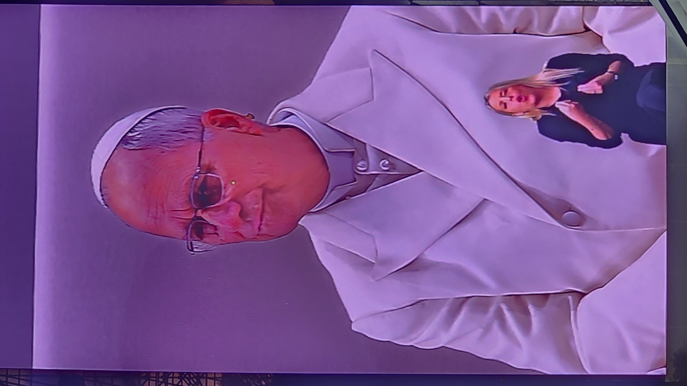
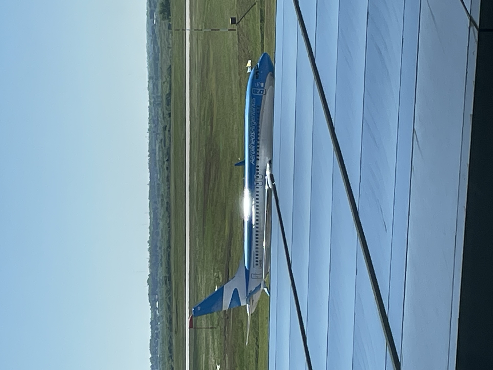
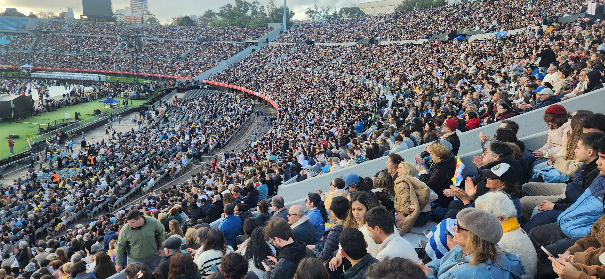

¿Quién es el Papa León XIV?

León XIV es el Papa de la Iglesia católica. Su nombre de nacimiento es Robert Francis Prevost. Fue elegido el 8 de mayo de 2025 y es el primer Papa nacido en Estados Unidos.
Su llegada a Uruguay
El Papa León XIV visitó Uruguay entre el 6 y el 8 de noviembre de 2026. Llegó al Aeropuerto Internacional de Carrasco el viernes 6 de noviembre y fue recibido por el presidente Yamandú Orsi y otras autoridades.

Su visita fue un acontecimiento importante para el país, ya que fue la primera visita de un Papa a Uruguay desde las visitas de Juan Pablo II en 1987 y 1988.
Actividades realizadas
- 6 de noviembre: llegada a Montevideo, ceremonia de bienvenida en Plaza Independencia y encuentros con autoridades.
- 7 de noviembre: visita a Paysandú, celebración de una misa y actividades pastorales en Montevideo.
- 8 de noviembre: celebración de una misa en Florida y despedida de Uruguay.

¿Qué valores transmite esta visita?
-
Esta visita transmite valores importantes, como ayudar
a quienes más lo necesitan, respetar a los demás,
vivir en paz y mantener una buena convivencia.
También busca fomentar la esperanza, la unión entre las
personas y el diálogo entre distintas comunidades.
Conclusión
La visita del Papa León XIV fue un acontecimiento importante para Uruguay. Más allá de las creencias religiosas de cada persona, su mensaje invita a reflexionar sobre el respeto, la solidaridad, la paz y la responsabilidad que tenemos dentro de la sociedad.